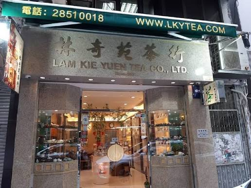
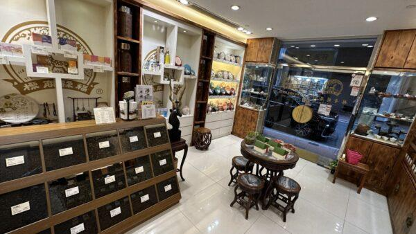
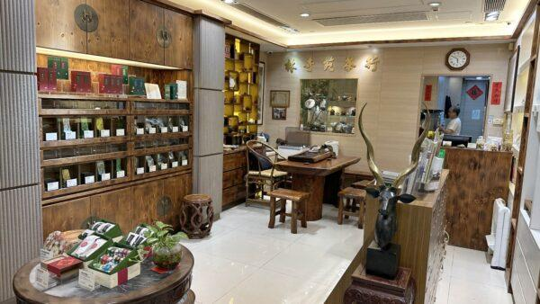
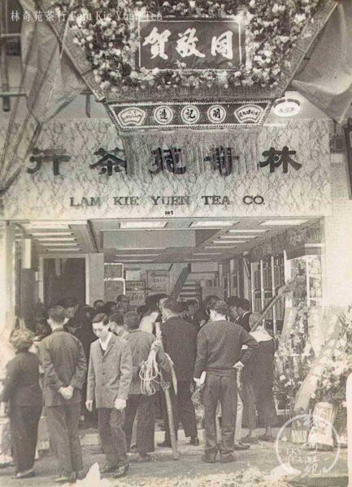
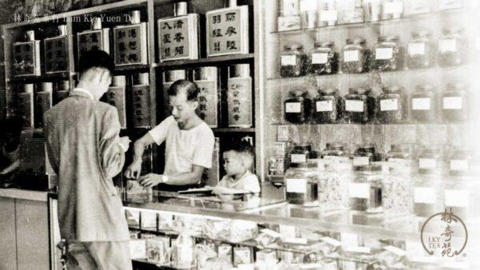
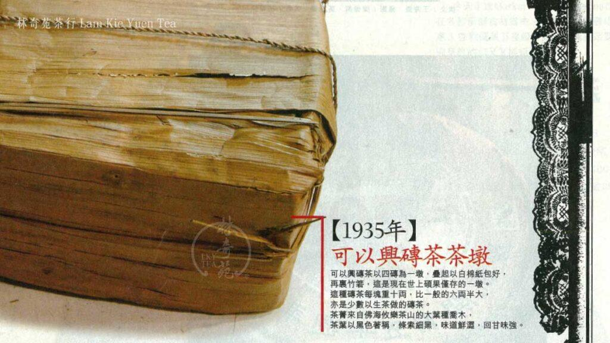

港九茶葉行商會
Hong Kong & Kowloon Tea Trade Merchants Association
1946 籌組 · 1948 正式成立
Hong Kong & Kowloon Tea Trade Merchants Association
1946 籌組 · 1948 正式成立
LAM KIE YUEN TEA CO. LTD. · SINCE 1955
創於 1955 年 — 上環老字號，批發與門市並重
林奇苑茶行於 1955 年由林君賢先生創辦。林君賢先生祖籍潮陽，1950 年隻身南下香港，落腳上環，在茶行當學徒學習焙茶及加工技術，五年後自立門戶。其親自設計的商標以鹿與蝙蝠構成，取諧音寓意「福祿」，隨茶香延續逾七十載。
創業初期，林奇苑向行家購買茶葉、自行包裝，再逐家逐戶上門銷售；積累多年後租下上環永樂街地舖經營門市，前舖後工場，自行焙茶加工。1992 年，林奇苑自置上環文咸東街 105 號現址物業，同年由其子林偉德先生接班經營至今。林偉德先生現為港九茶葉行商會第二十三屆理事長。
九十年代中，林奇苑向金山樓、龍門大酒樓、陸羽茶室等老牌食肆收購倉存陳年茶葉，累積老茶底蘊；店內至今保留手工「枕頭包」包裝技藝，並有每年拼配十二生肖周年茶餅的傳統。2012 年門市大裝修時，特意保留開業時的書法字體紅紙茶罐、天秤等老器具，新舊並存。
資料來源：香港老舖記錄冊「林奇苑茶行 – 上環」專文、林奇苑茶行官網、香港旅遊發展局優質旅遊服務計劃商戶資料、商會官網會員名冊






業務分類據香港老舖記錄冊及香港旅遊發展局商戶資料（專營茶葉零售、批發及出口）；產品詳情與供應請向商號查詢。
聯絡資料據 HSBC 商戶名錄及商會官網會員名冊（名冊第 34 項，設有門市）；到訪前建議先致電確認營業安排。